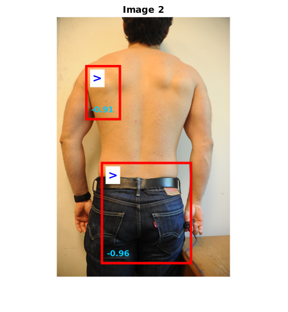
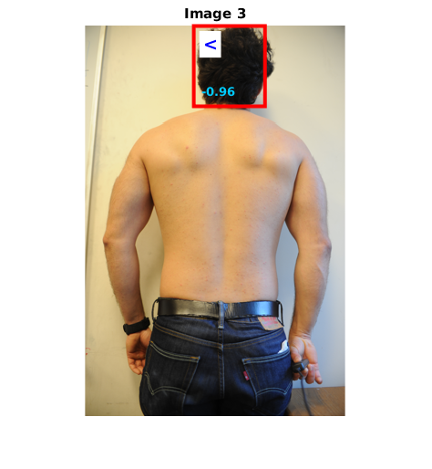
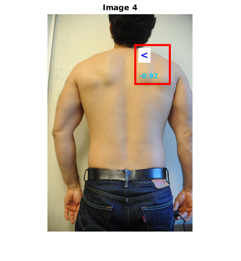
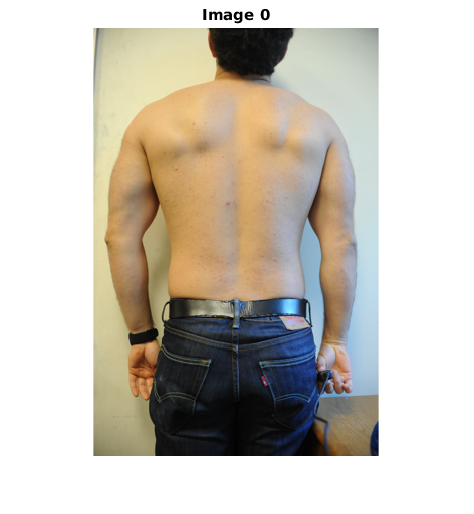

Contents
load('head-gen-on-ub-4laeo.mat');
lsymbs = '><><><';
detthr = -0.97;
img_source = '/media/esteva/ExtraDrive1/ThrunResearch/NikonD3Data/4-9-2015/DSC_7971.JPG';
resize = @(x) imresize(x, 0.1);
rotate90 = @(x) imrotate(x, 90);
img_source = rotate90(resize(imread(img_source)));
imgs = {
'/media/esteva/ExtraDrive1/ThrunResearch/NikonD3Data/4-9-2015/DSC_7983.JPG'
'/media/esteva/ExtraDrive1/ThrunResearch/NikonD3Data/4-11-2015/DSC_7987.JPG'
'/media/esteva/ExtraDrive1/ThrunResearch/NikonD3Data/4-6-2015/DSC_7947.JPG'
'/media/esteva/ExtraDrive1/ThrunResearch/NikonD3Data/4-1-2015/DSC_7899.JPG'
'/media/esteva/ExtraDrive1/ThrunResearch/NikonD3Data/4-6-2015/DSC_7946.JPG'
};
imgs = cellfun(@imread, imgs, 'UniformOutput', false);
imgs = cellfun(resize, imgs, 'UniformOutput', false);
imgs = cellfun(rotate90, imgs, 'UniformOutput', false);
for i=0:length(imgs)
display(['Processing Image ' num2str(i)]);
if(i ==0)
img = img_source;
else
img = imgs{i};
end
Processing Image 0
Processing Image 1
Processing Image 2
Processing Image 3
Processing Image 4
Processing Image 5
Run head detector on the whole image: it works better on upper-body areas
[dets, boxes] = imgdetect(img, model, detthr);
top = nms(dets, 0.5);
dets = dets(top,:);
figure;
imshow(img), hold on;
title(['Image ' num2str(i)]);
if(~isempty(dets))
Draw the detections
bbox = dets(:,[1:4 end-1 end]);
for ii = 1:size(bbox,1)
hr = rectangle('Position', [bbox(ii,1) bbox(ii,2) bbox(ii,3)-bbox(ii,1) bbox(ii,4)-bbox(ii,2)]);
set(hr, 'EdgeColor', [1 0 0]);
set(hr, 'LineWidth', 3);
component = bbox(ii, end-1);
str = lsymbs(component);
ht = text(bbox(ii,1)+10, bbox(ii,2)+20 , str);
set(ht, 'FontSize', 14);
set(ht, 'Color', [0 0 1]);
set(ht, 'BackgroundColor', [1 1 1]);
set(ht, 'FontWeight', 'bold');
str = sprintf('%.2f', bbox(ii, end));
ht = text(bbox(ii,1)+8, bbox(ii,4)-15 , str);
set(ht, 'FontSize', 10);
set(ht, 'Color', [0 0.8 1]);
set(ht, 'FontWeight', 'bold');
end
axis equal;
axis off;
drawnow;
print -dpng 'detections.png';
  
end


end